Item 1
Chapters 13, 14 and 15 as built, with the creative director’s scores (panel 5)
Recommendation Approve them.
- What it rests on
- All 33 items score 4 or more on all six criteria, and the four-width check passes on version 14 with no failures.
For Dustin Cathcart · November 20, 2026
Phase 3 built chapters 13, 14 and 15 with the chart kit behind them, and this gate’s pass applied your 24 answers on board 3.
Panel 1 asks for your word on seven decisions and five questions about Phase 4, each with the studio’s recommendation. The panels after it show the Phase 4 proposal, each of board 3’s answers before and after at true size, the label clearance list, the scores, the page’s weight and what was tested.
Panel 1 takes about nine minutes to read (1,856 words), at 200 words a minute. Pictures show at true size; where one is wider than your window, its frame scrolls sideways.
Panel 1
ReadyGate 3 asks for your word on seven decisions and five questions about Phase 4. Each item opens with the studio’s recommendation, then what it rests on.
To answer, reply “As proposed”, or name the item and your change.
Item 1
Recommendation Approve them.
Item 2
Recommendation Approve it.
Item 3
Recommendation Approve the resolutions as the table prints them, and the issue list as it stands for the atlas’s next version.
Item 4
Recommendation Approve them for version 6.0.0, which ships at Phase 5.
oa.color.tint.prussianN56) and #505C7D (prussianN29), the colors you approved at board 1; four new roles that name existing colors for charts (the diverging scale on Charcoal, the four-ink group order, the faint lines behind small multiples, and the evidence line code); and the phone tile gap at 2 px. Releases 6.0.0-gate3.1 to 6.0.0-gate3.3.Item 5
Recommendation Switch it on for every chart, so no band’s edge can run through a value label.
Item 6
Recommendation Yes to all three, made in Phase 4’s first chat.
| Change | Today | Proposed |
|---|---|---|
| (a) Rule 14.6, its fifth paragraph | “so a named area, whose size follows its data, takes Charcoal at any size” | “so a named area, whose size follows its data, takes the text’s ink at any size” |
| (a) Rule 14.6, its specification “A named area, or past 5 percent of the drawing” | “Charcoal, with the label (Rule 05.1)” | “The text’s ink, with the label (Rule 05.1)” |
| (b) Rule 06.3, its “Data label” specification | “Inter 600, 13 px, line height 1.3, tabular figures” | “Inter 600, 13 px, line height 1.3, tabular figures, except a chip’s ID (Rule 18.24)” |
| (c) Rule 05.5, after “The error bar takes none, since the error mark and the word “Error:” carry the error and the 4 px bar beside them repeats it.” | Nothing | “The atlas’s red target takes none either: the atlas draws it as a red ring and arrowhead, and each plate names its target in words beside the drawing (Rule 15.11).” |
| (c) Rule 05.3, its reason | “On Newsprint it measures 2.96 to 1, so a working red mark there takes a keyline, a 1 px Charcoal edge drawn inside the mark (Rule 05.5).” | “On Newsprint it measures 2.96 to 1, so a working red mark there takes a keyline, a 1 px Charcoal edge drawn inside the mark, apart from the two marks Rule 05.5 names.” |
Rule 05.7 keeps its words: its keyline belongs to a chart’s named point, such as a single bar, which keeps it, and the atlas’s target is no chart point. The main session drafted (c)’s two sentences for this report; the editor reads them before they are built.
Item 7
Recommendation Approve it as proposed, with the five defaults below unless you answer.
Question P4-1
Until you answer Both, each with its own banner.
Question P4-2
Until you answer Slide layouts as PDF and PNG at 1920 x 1080, plus a PowerPoint file, which Keynote and Google Slides both open.
Question P4-3
Until you answer Narrower than the brief: labeled placeholders and written prompts, and a generated image only where a rule cannot show its own label without one, after its tool’s terms are read.
Question P4-4
Until you answer The V5 content kept, each figure checked against its source and dated, any figure the research lead finds superseded flagged for you, the editor’s disclosure left out, and Reforms R-01 and R-02 treated as every other reform.
Question P4-5
Until you answer Yes. In chat 10 the engineer embeds each photograph once for the whole page and both chapters draw from that copy, which also frees the 190,992 bytes of the meeting photograph’s second copy today. If one copy cannot serve both chapters, chapter 16 teaches on placeholders and the question returns to you on Phase 4 board 1. the question of commissioning photographs stays open.
Chapters 13 to 15 as built, the chart kit as an asset, the reconciliation table and V7.1 rows, the chart tokens, the label clearance check, the three word changes, and the Phase 4 proposal with its five defaults. Phase 4 starts in a new chat after your reply.
To answer, reply “As proposed”, or name the item and your change.
Reference: DR-293 · D3-2356 · DR-100 · DR-223 · DR-235 · DR-236 · DR-238 · DR-295 · Q-04 · work/handoffs/phase-1/20261021_Atlas-V7-1-Issue-List.md
Panel 2
ReadyPhase 4 builds the seven application chapters and the twelve-page report, under the Phase 4 prompt and Master Brief sections 16, 18 and 19. It builds on answers you have already given: the eight channels by name, the seven chapters that hold them, applications drawn live with their export files beside the guide, a platform-neutral website and handles labeled until you name them, and each chapter sized before it is built, with nothing cut (board 3’s reply 19). It also carries answers you gave before Phase 3: one dark mode for every screen product, with a visible switch that remembers the reader’s choice; the atlas visual system you settled, on Newsprint; ampersand B alone on the Charcoal tile as the social avatar; the 96 px sign-off on social cards; the print lockup; and a web address on social cards only once the site is settled. The page stays one file, and its only fixed limit is 16 MB.
| Chapter | What it holds | Lead |
|---|---|---|
| 16 Photography, illustration and video | Image selection, cropping, captions (who, what, where, when), credits, consent and rights, alt text written for purpose, taught on the two public-domain federal photographs chapter 01 already shows (question P4-5), each with its rights row and drawn from the one copy the page embeds; where spot illustration, exploded diagrams and generated conceptual images may appear, and how each is labeled; labeled placeholders hold the place of commissioned work until a photography commission exists; short-video structure, open and closed captions, transcripts, title and end frames, and the fallback when an embed fails | Creative director with the design director |
| 20 Web | Your website: desktop and mobile mastheads, home navigation, the footer, the home page, an article page and one Act page that gives the reader a practical way to take part, the share preview and the favicon set, at 1440, 1024, 390 and 360 px, each page on Newsprint and in the dark mode with its switch, built from the tokens and chapter 18’s components | Design director with the accessibility lead |
| 21 The atlas | Atlas home, a detail page, the evidence view (the Register), loop pages and typed ID chips, in the atlas visual system you settled, on Newsprint and in the dark mode, finished by its finishing list, with views drawn from the concepts Field Manual (03), The Circuit (09), Who Can Act (10) and Register (11); the atlas system test | Design director with the data visualization lead |
| 22 Newsletter and email | Substack: the publication’s logo, wordmark, cover, email header, post opener, divider, section heads and welcome words, set within what Substack lets a publisher change, and one chart inside a post at Substack’s body width, as a still image with its alt text and source line; one complete working HTML email for any sender other than Substack, readable with images off and web fonts missing, in a mail app’s dark mode, with a plain-text part, alt text on every image, and small enough that Gmail shows it whole (the research lead confirms Gmail’s limit) | Design director with the editor |
| 23 Social and video | One section each for X, Threads, Instagram, YouTube, TikTok and LinkedIn, each with the profile as a reader meets it (the avatar over the banner at desktop and phone widths, where the crops collide), then the video frames shared across them; the social card’s 1080 x 1920 frame, held for this chapter | Design director with the accessibility lead |
| 24 Reports | The twelve-page report with a full editorial and visual pass: cover, executive brief, chart page, evidence spread, source notes and closing page at full size, in the report reader with its keyboard support; US Letter, 8.5 x 11 in, with bleed and margins stated | Design director with the editor |
| 25 Print and presentation | The one-page explainer and letterhead on US Letter, slide cover, content and data layouts at 1920 x 1080, the event poster at 24 x 36 in and the table sign at 11 x 17 in, each with bleed and margins stated and the print lockup; an event piece with a partner puts the host’s name first | Design director with the engineer |
Every size below is a starting point. The research lead reads each platform’s official help page on the day its application is built and records the page and the date in a platform specifications file. Handles print with an Illustrative label until you name them.
| Channel | Chapter | Applications | Starting sizes to verify |
|---|---|---|---|
| Oath & Action website | 20 | Mastheads, home navigation, footer, the home page, an article page and an Act page, each on Newsprint and in the dark mode with its switch; share preview, favicon set | Page widths 1440, 1024, 390 and 360 px; share preview 1200 x 630; favicons from the standard set |
| Substack | 22 | Logo, wordmark, cover, email header, post opener, divider, section heads, welcome words, share preview | Logo, wordmark and cover sizes from Substack’s help center; Substack sends posts in its own email template, and the research lead lists which parts a publisher sets |
| X (Twitter) | 23 | Avatar (ampersand B on the Charcoal tile), header, post images in one and four, a thread’s opening card, link card | Avatar 400 x 400 with a circle-safe area; header 1500 x 500; post image 1600 x 900; link card 1200 x 628 |
| Threads | 23 | Avatar, single and carousel posts, link preview | Avatar shared with Instagram unless set apart; posts at Instagram’s sizes; link preview from the website’s share image |
| 23 | Avatar, square, portrait and carousel posts, Stories and Reels covers with their safe zones, the profile grid’s crop | Avatar 320 x 320 shown, 1080 x 1080 uploaded; square 1080 x 1080; portrait 1080 x 1350; vertical 1080 x 1920; the grid’s current crop from the help page | |
| YouTube | 23 | Avatar, channel banner with its safe area, video thumbnail, Shorts cover, watermark, title and end frames | Avatar 800 x 800; banner 2560 x 1440 with its central safe area; thumbnail 1280 x 720; video 1920 x 1080; Shorts 1080 x 1920 |
| TikTok | 23 | Avatar, video cover, photo carousel, title and end frames with the app’s button zones clear | Video 1080 x 1920; cover and carousel per TikTok’s creator pages |
| 23 | Profile and page avatars, banners, single image and document (PDF carousel) posts, link card | Avatar 400 x 400; personal banner 1584 x 396; company page cover per LinkedIn’s help page; post images 1200 x 627, 1080 x 1080 and 1080 x 1350 |
Video frames serve YouTube, TikTok, Instagram’s Reels and LinkedIn’s video at 1920 x 1080 and 1080 x 1920, each with its caption-safe area.
The chart kit is the model. The engineer builds one application kit: a renderer per application type that reads a small content file and draws the application in HTML or SVG with the guide’s own fonts and tokens. The guide shows each one live at true size in a scaled frame, the way chapter 14 shows a chart, and the same source writes the export files (PNG, PDF and the email’s HTML) into a Phase 4 exports folder that Phase 5 packages. A dimension script checks every export’s pixels or page size against the specifications table, and every social, video and email application carries a safe-area overlay a reader can switch on. Chapter 18’s components and the guide’s own page styles are reused, never copied.
Content comes from real Oath & Action material where it exists and from real public examples the research lead finds, and carries the Illustrative label beside any invented person, quote, place or figure. Examples rotate across issues, states and sides, by one standard of evidence. No generated image serves as evidence or as documentary imagery.
Board 3’s reply 19 asked for each Phase 4 chapter to be sized before it is built, with nothing cut. Today’s build weighs 12,210,634 bytes. With chapter 15’s held allocation and Phase 5’s two chapters at 200,000 bytes each, Phase 4’s seven chapters have 3,359,455 bytes between them under the page’s 16 MB, and 2,859,455 under the 15.5 MB line the build reports as a warning. The studio sized each chapter from the built chapter nearest it in kind, at that chapter’s bytes for each rule, times the rules Phase 4 expects to write.
| Chapter | Nearest built chapter, bytes per rule | Rules expected | Share of Phase 4’s room | Allocation |
|---|---|---|---|---|
| 16 Photography, illustration and video | 12 Graphic devices, 21,783; 13 Evidence, 18,706 | About 12, with labeled placeholder plates; the two photographs drawn from chapter 01’s copy at no new bytes | 8.9 percent | 300,000 |
| 20 Web | 18 Components, 48,651 (live components with code) | About 10 | 14.9 percent | 500,000 |
| 21 The atlas | 11 Status and utility icons, 27,946; 15 Systems graphics, 22,804 | About 16 | 13.7 percent | 460,000 |
| 22 Newsletter and email | 11, 27,946, with the working email shown in a frame | About 10 | 8.9 percent | 300,000 |
| 23 Social and video | 17 Motion and states, 32,856 | About 20: six channel sections and the video frames | 19.6 percent | 660,000 |
| 24 Reports | 17, 32,856, for twelve pages and the reader | About 13 | 13.4 percent | 450,000 |
| 25 Print and presentation | 08 Lockmark, 38,944; 17, 32,856 | About 9 | 10.1 percent | 340,000 |
| All seven | 89.6 percent | 3,010,000 |
That leaves 349,455 bytes under 16 MB as a reserve, and puts the page about 150,545 bytes past the 15.5 MB line, which the build reports and does not stop on. With these allocations the page projects to 15,650,545 bytes, 97.8 percent of 16 MB. The build’s own projection today, 15,180,545, still counts each Phase 4 chapter at 362,857 bytes; chat 10 sets it to these figures. Each allocation moves as its content needs; only the 16 MB stops a build. The method counts rules, and chapters 20 and 23 draw more than their nearest built chapters do, so chat 10 measures the application kit’s bytes for one social post, one web page at four widths with its dark mode and one report page, re-sizes the seven from those figures, and shows the result on Phase 4 board 1. Chapter 27’s 200,000 bytes must also index every export Phase 4 makes. The application kit draws at build time into static markup, so the page carries no second renderer beside the chart kit, and every export lives outside the page.
The bars read the allocations against the 3,359,455 bytes Phase 4 has under 16 MB, worked out by this board from version 14’s build report. The seven come to 3,010,000, which leaves 349,455 in reserve.
Phase 4 runs in seven chats with three boards, one more chat than the work tracker holds today, for the six social channels.
| Chat | What it builds | Ends with |
|---|---|---|
| 10 | Platform specifications for all eight channels, read from their official help pages; chapter 16; the application kit’s first build and its measured bytes | A note for the next chat |
| 11 | Chapter 20, your website; chapter 21, the atlas with its system test. If it runs long, the atlas moves to a chat of its own with its system test whole | A note for the next chat, before the review |
| 12 | The review of chapters 16, 20 and 21, the fix pass and the rescore; Phase 4 board 1 | Your answers |
| 13 | Chapter 22, Substack and email; chapter 23’s X, Threads and Instagram | A note for the next chat |
| 14 | Chapter 23’s YouTube, TikTok and LinkedIn, and the video frames; the review of chapters 22 and 23, the fix pass; Phase 4 board 2 | Your answers |
| 15 | Chapter 24, the twelve-page report; chapter 25, print and presentation; their review and fix pass; Phase 4 board 3 | Your answers |
| 16 | A read across the seven chapters for anything stated two ways, the closing checks, the chapters page, the Gate 4 report with its board and the Phase 5 proposal | Your approval at Gate 4 |
| Board | After | What it shows | What you decide |
|---|---|---|---|
| Phase 4 board 1 | Chats 10 to 12 | Chapter 16’s rules with their photographs and placeholders; the website at 1440, 1024, 390 and 360 px, on Newsprint and in the dark mode; the atlas’s home, detail and evidence views with its system test; the application kit, its measured bytes and the re-sized allocations; the specifications table | Chapter 16’s rules; the website’s look; the atlas’s views; anything that changes approved work |
| Phase 4 board 2 | Chats 13 and 14 | Every channel’s applications at true size with their safe-area overlays and export sizes; the working email at 600 and 375 px with images off | Each channel’s set; the handles once you name them |
| Phase 4 board 3 | Chat 15 | The twelve report pages at full size in the reader; the print pieces and slides at true size | The report and the print pieces |
The research lead stays a chat ahead with each channel’s specifications and real examples. The creative director and the design director write chapter 16. The design director resolves every application with the accessibility lead, and the editor writes every word a reader sees. The engineer builds the application kit, its exports and its checks. The data visualization lead signs off any chart, map or atlas view an application carries. Each board’s review runs the six readings Phase 3 used (statistics, civic education, accessibility, nonpartisanship and brand, craft at twice size, and production, where a simulated producer makes one new application from the chapter alone), with a simulated reader panel reported as simulated, one fix pass, the short second pass and the creative director’s scores; an item ships at 4 or more on all six criteria.
| Check | Passes when |
|---|---|
| Every export against the specifications table, by script | Every pixel and page size matches |
| Safe-area overlays for each social, video and email application | No text, mark or face inside an app’s button or crop zone |
| Each web application at 1440, 1024, 390 and 360 px | Captured, with the guide check’s axe run at 0 failures |
| The email in a browser at 600 and 375 px, with images off | Every word and link still there; the clients not tested listed by name |
| Every report page at full size, with a keyboard walk of the reader | Every control reached and named |
| The Illustrative label beside every realistic quote, person, place, handle and figure | Every one |
| The guide check at four widths and the quick check with photographs, on the final build | 0 failures |
| Page weight | The page under 16 MB; each chapter’s figure reported against its allocation |
| Contrast measured on every export’s pixels, text on photographs and on Charcoal included | Every text and mark at its ratio (Master Brief section 22) |
| The guide check’s red, party and label tests on every social and video application | 0 failures (your rule against red and blue on election graphics covers social cards) |
| Each avatar, favicon and thumbnail at the smallest size its platform shows | The mark and any words still read |
| Print preflight for every print piece | Bleed, embedded fonts, each image’s resolution at its printed size, and each ink’s print value |
| Each web and atlas page in the dark mode at 1440 and 390 px | Captured; the switch reached by keyboard and remembered |
| Keyboard walks of the site’s menu and of the report reader | Every control reached and named |
| Alt text on every export, and captions and a transcript for every video frame set | Every one |
| Rule 01.9’s spread over Phase 4’s examples, the locked lines on every application, and a rights row for every image and platform mark | By script; 0 faults |
| Safari, Firefox, real screen readers and email clients other than the one tested | Listed as not tested at Gate 4 |
Reference: DR-271 · DR-292 · DR-296 · DR-297 · DR-298 · DR-36 · DR-55 · DR-64 · DR-93 · DR-102 · DR-116 · DR-121 · DR-191 · DR-202 · DR-204 · DR-210 · DR-211 · DR-238 · DR-268 · DR-279 · Q-04 · brief/phase-prompts/20261020_V6-Phase-4-Applications-And-Reports.md
Panel 3
ReadyYou answered all 24 of board 3’s replies as recommended. Each reply has a card here, in reply order, that gives what you approved, what changed and in which rule, and version 13 beside version 14 at true size where the change shows. The eight replies that changed nothing on the page take one line each, at the end.
Reply 6
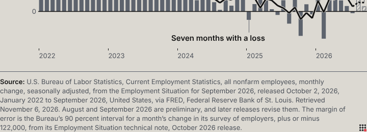
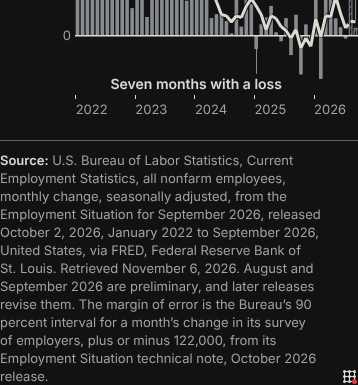
Reply 7
Board 3’s other choice, not taken. To update both, reply “Chapter 02 too”.
Reply 8
On screen. Nothing moved. The accessibility lead read Chromium’s accessibility tree: 36 headings added and no level skipped, and the plate and all 18 group blocks match version 13 pixel for pixel at 1440 and 390 px.
Reply 9
Reply 10
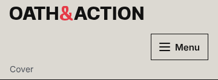

Reply 11
Board 3’s other choice, not taken. For a keyline on every red target, reply “Keyline everywhere”.
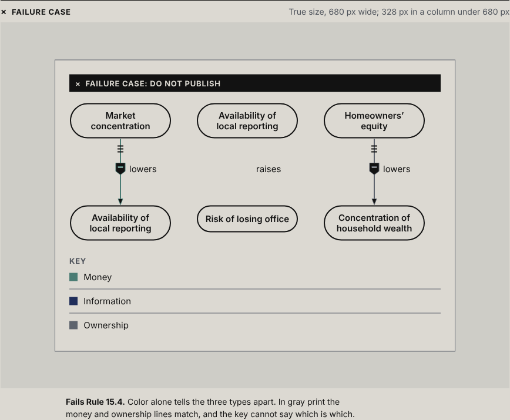
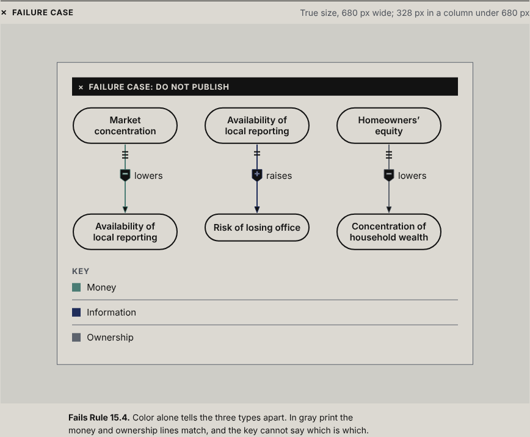
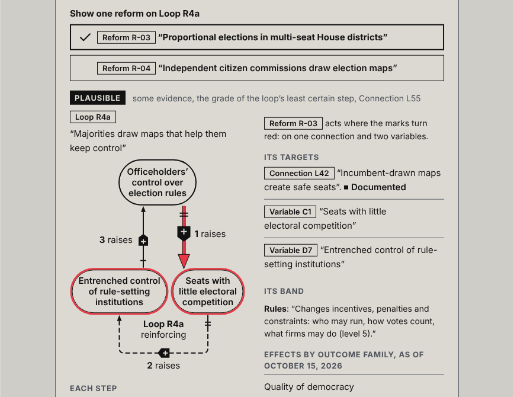
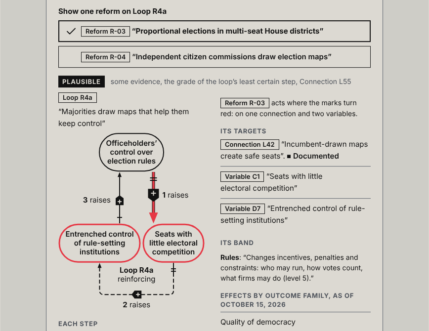
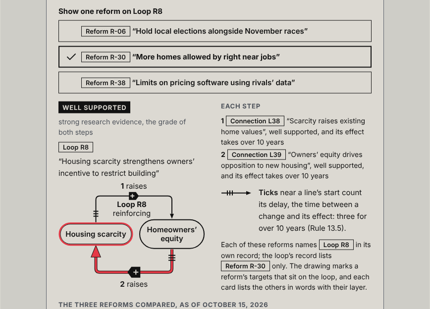
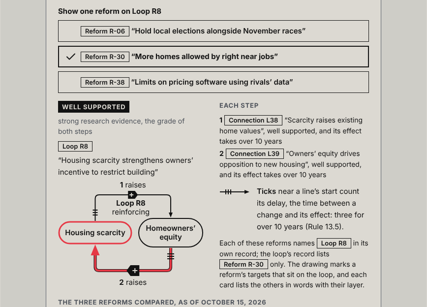
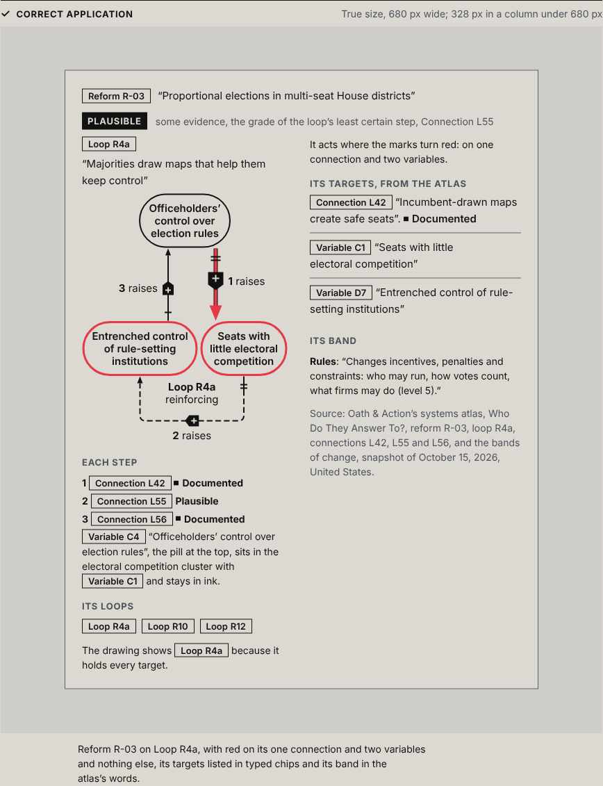
In gray, each chosen pill’s red ring reads lighter than a plain pill’s black edge, so the target is the faintest mark, and the words beside each plate carry it.
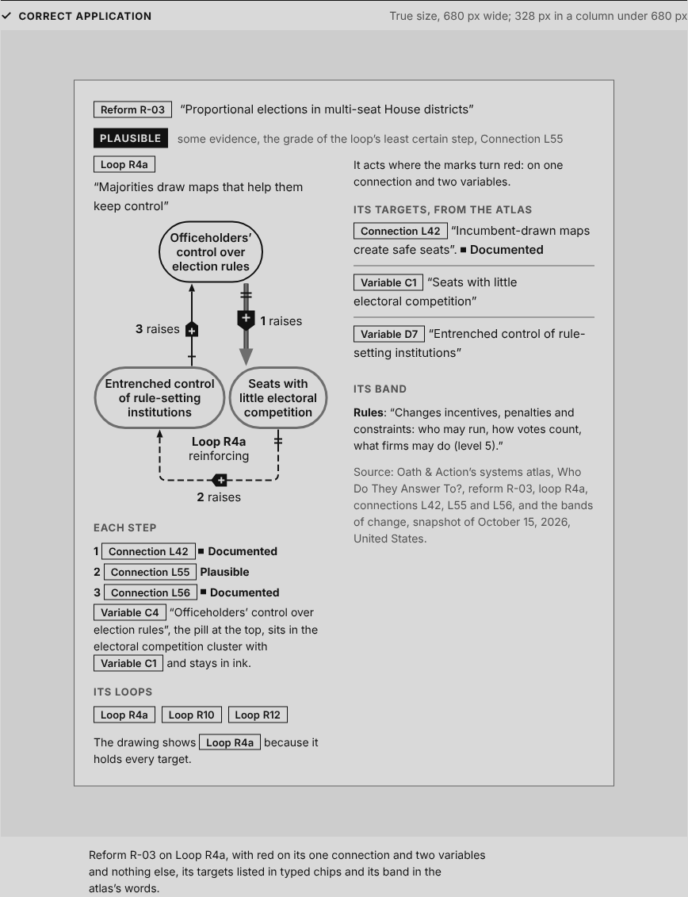
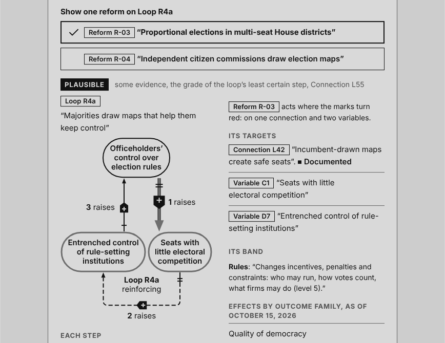
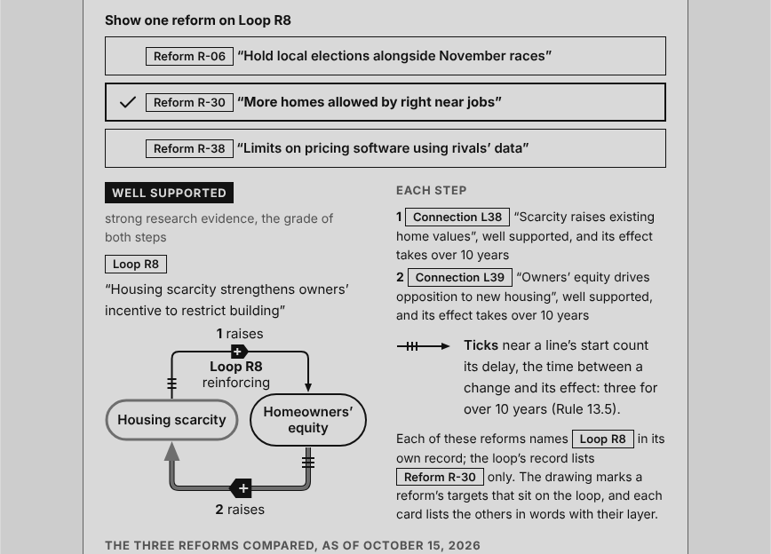
Rule 15.20 in version 14 · Rule 14.144 in version 14 · Rule 15.12 in version 14 · Rule 15.4 in version 14
Reply 12
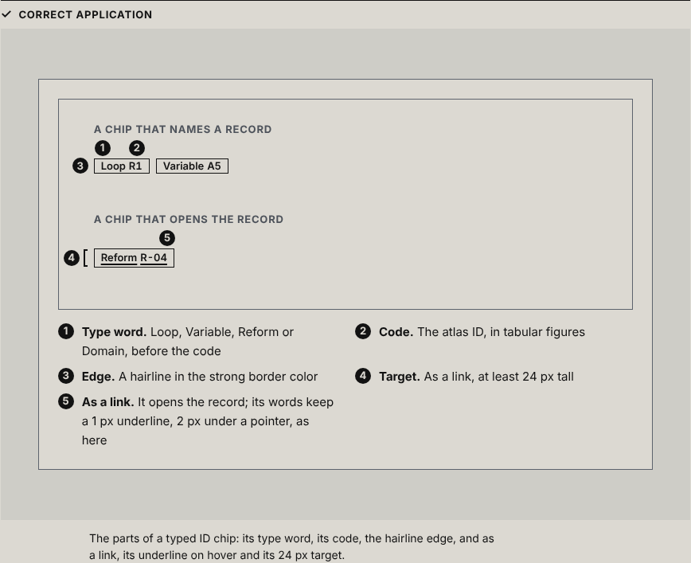
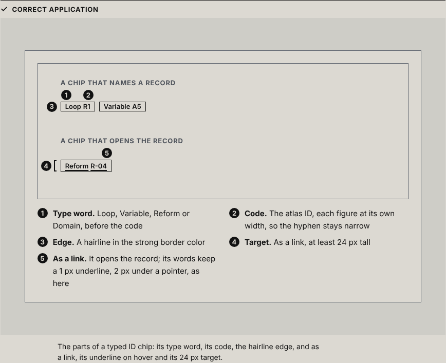
Reply 13
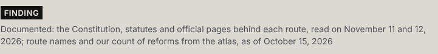
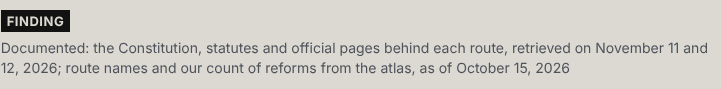
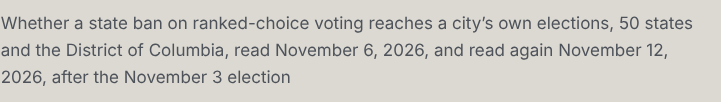
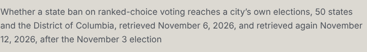
Reply 14
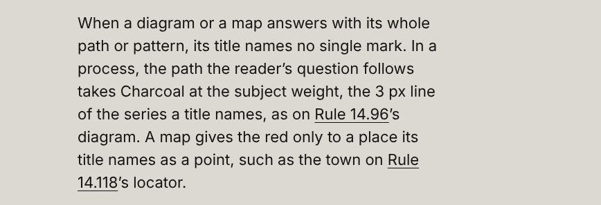
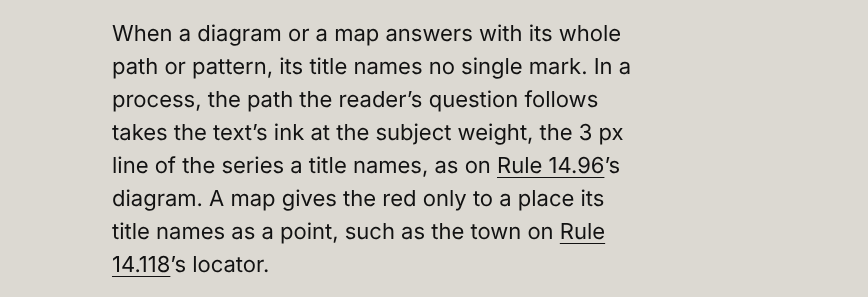
Reply 15
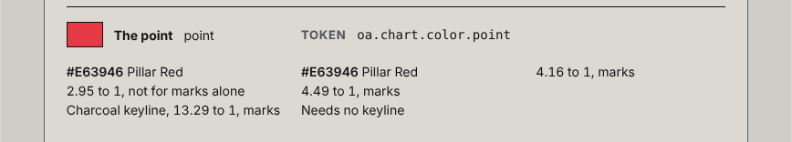
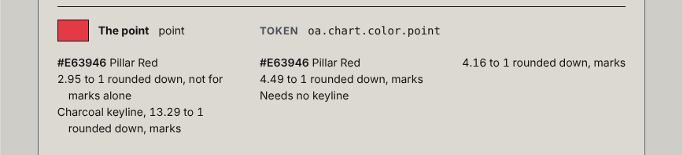
Reply 16
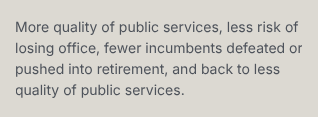
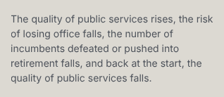
Reply 17
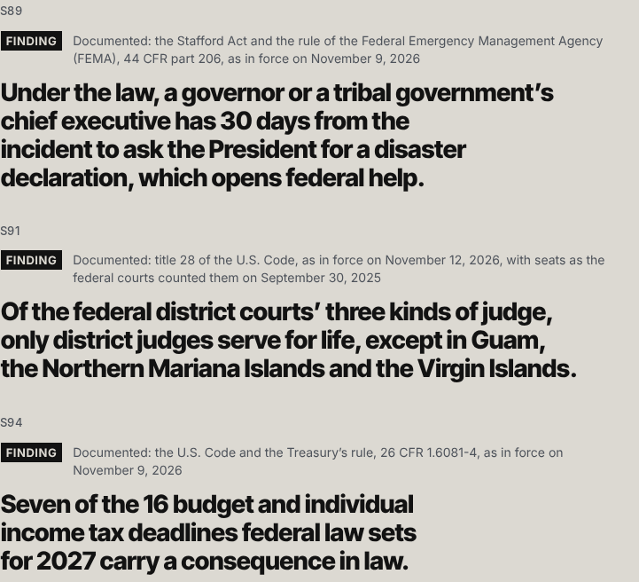
Rule 14.135 in version 14 · Rule 14.137 in version 14 · Rule 14.140 in version 14
Reply 18
Board 3’s other choice, not taken. For a stated search instead, reply “Run the search”.
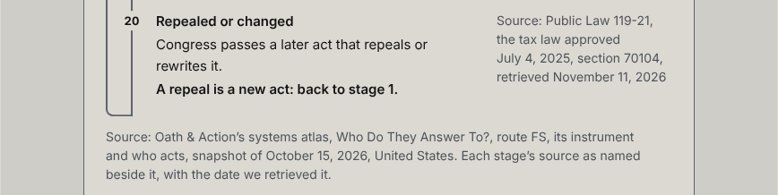
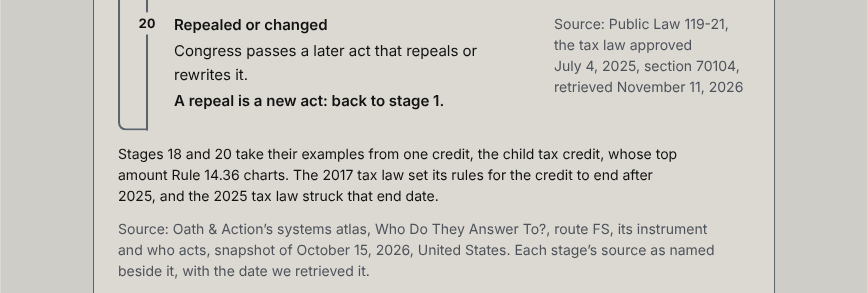
Reply 20
On screen. Nothing changed on screen. The accessibility lead found the four plates pixel for pixel the same at 1440, 390 and 360 px, and each table named by its caption in Chromium’s tree. Whether a screen reader speaks the head sentence once is still to test.
Rule 11.1 in version 14 · Rule 11.2 in version 14 · Rule 11.10 in version 14 · Rule 11.11 in version 14
Reply 22
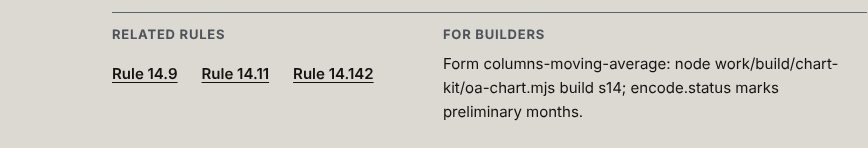
Reply 23
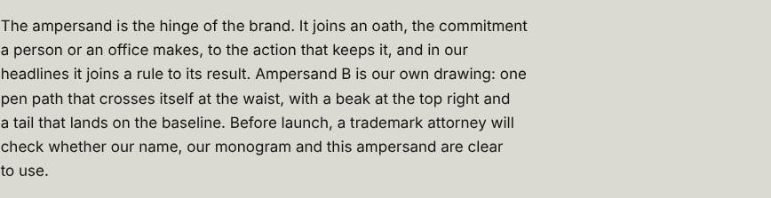
Reference: DR-291 · DR-293 · 11.10 · 11.11 · CE-S22-words · CE-S22-examples · NB-S4 · D3-2338 · D3-2347 · S14-line-02-13 · D3-2343 · RP-14-headings · RP-14 · D3-2340 · D3-2352 · D3-2353 · S59-label · DR-295 · D3-2341 · D3-2350 · masthead-360 · D3-2326 · red-target-keyline · DR-36 · D3-2292 · D3-2349 · CR-S17-chips · CR-S17 · S71-retrieved · DF-10 · D3-2318 · D3-2336 · D3-2345 · 14.6-ink · D3-2319 · pillar-red-ratio · 15.15-read-aloud · DR-265 · CR-S19-chip · CR-S19 · 15.22-examples · Q-PR1 · AX-S3-tables · AX-S3 · DR-294 · D3-2354 · CR-S4-sticky · related-rules · RS-5 · Q-12 · D3-2310 · routes-who
Panel 4
ReadyThe kit’s label clearance check moves a value label off a band edge that runs through it. Today only S59 turns it on. The engineer ran the check’s own test over every chart as a list, moving nothing, to show what switching it on for every chart would move.
With S59’s own setting in place, the test read 96 charts in 43,897 drawings, at every width the kit draws each one, and found no chart it would move.
Before S59 took its setting, the same test found one chart, S59, whose “4.1” a band edge crossed at 344 widths. The setting moved that one word, at those widths only.
| Chart | Rule | Label | Drawing widths where an edge crossed it | Widths |
|---|---|---|---|---|
| S59 | 14.77 | “4.1” | 274 to 617 px | 344 |
S59 at a 390 px window, one of the widths where the band’s edge crossed the label: the moved label beside its old place.
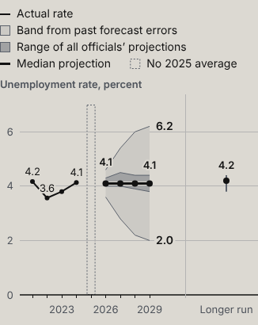
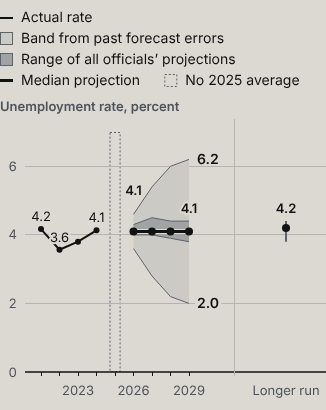
Reference: DR-295 · D3-2341 · D3-2350
Panel 5
ReadyThe creative director scores each item from 1 to 5 on six criteria: craft, clarity, brand fidelity, usefulness, evidence honesty and accessibility. An item ships at 4 or more on all six with no Must fix open.
All 33 items score 4 or more on all six.
| Item | Round | Craft | Clarity | Brand fidelity | Usefulness | Evidence honesty | Accessibility | Last scored in |
|---|---|---|---|---|---|---|---|---|
| Chapter 13, Evidence and sourcing | Round 0 | 4 | 4 | 4 | 4 | 4 | 4 | This gate’s rescore |
| The data palettes and their proofs | Round 0 | 4 | 4 | 5 | 4 | 4 | 4 | Round 0 rescore |
| The chart kit, S01 to S16, and its exports | Round 0 | 4 | 4 | 5 | 4 | 4 | 4 | This gate’s rescore |
| Rules 14.1 to 14.14 and chapter 14’s opener | Round 1 | 4 | 4 | 4 | 4 | 4 | 4 | Round 1 rescore |
| S17 to S23 and S36 to S42 | Round 1 | 4 | 4 | 4 | 4 | 4 | 4 | This gate’s rescore |
| S24 to S35, with S02, S05, S09, S11, S13 and S14’s entries | Round 1 | 4 | 4 | 4 | 4 | 4 | 4 | Round 1 rescore |
| Four sketches | Round 1 | 4 | 4 | 4 | 4 | 4 | 4 | Round 1 rescore |
| Chapter 15’s opener, Rules 15.1 to 15.10, 15.13 and 15.14 | Round 1 | 4 | 4 | 4 | 4 | 5 | 4 | Round 1 rescore |
| S43 to S48 and S60 to S64 | Round 2 | 4 | 4 | 4 | 4 | 4 | 4 | Round 2 rescore |
| S49 to S59 | Round 2 | 4 | 4 | 4 | 4 | 4 | 4 | This gate’s rescore |
| Fifteen sketches | Round 2 | 4 | 4 | 4 | 4 | 4 | 4 | Round 2 rescore |
| Rules 14.1 to 14.14 as round 2 changed them | Round 2 | 4 | 4 | 4 | 4 | 4 | 4 | Round 2 rescore |
| Rules 15.11, 15.12 and 15.15 to 15.18 | Round 2 | 4 | 4 | 4 | 4 | 4 | 4 | Round 2 rescore |
| S66 to S72 | Round 3 | 4 | 4 | 4 | 4 | 4 | 4 | This gate’s rescore |
| S65 and S73 to S77 | Round 3 | 4 | 4 | 4 | 4 | 4 | 4 | Round 3 rescore |
| The maps, S78 to S84, with S07, S12 and S16 | Round 3 | 4 | 4 | 4 | 4 | 4 | 4 | Round 3 rescore |
| Nine sketches | Round 3 | 4 | 4 | 4 | 4 | 4 | 4 | Round 3 rescore |
| Rules 14.1 to 14.14 as round 3 changed them | Round 3 | 4 | 4 | 4 | 4 | 4 | 4 | Round 3 rescore |
| S85 to S88 and two sketches | Rounds 4 and 5 | 4 | 5 | 4 | 4 | 5 | 4 | Rounds 4 and 5 rescore |
| The infographics, S89 to S95 | Rounds 4 and 5 | 4 | 4 | 5 | 4 | 5 | 4 | This gate’s rescore |
| S12’s stacked tile and the phone codes | Rounds 4 and 5 | 4 | 4 | 4 | 4 | 4 | 4 | Rounds 4 and 5 rescore |
| “Choose a chart” | Rounds 4 and 5 | 4 | 5 | 5 | 5 | 4 | 5 | This gate’s rescore |
| The palette specification | Rounds 4 and 5 | 4 | 4 | 5 | 5 | 5 | 4 | This gate’s rescore |
| Rule 14.142 with S96 | Rounds 4 and 5 | 4 | 5 | 5 | 5 | 5 | 4 | Rounds 4 and 5 rescore |
| Rule 14.143, Loops B4 and R10 stepped | Rounds 4 and 5 | 4 | 5 | 5 | 4 | 5 | 4 | Second pass rescore |
| Rule 14.144, three reforms on the chooser | Rounds 4 and 5 | 4 | 4 | 5 | 4 | 5 | 4 | This gate’s rescore |
| Chapter 14’s intro and group lines | Rounds 4 and 5 | 4 | 5 | 4 | 4 | 4 | 4 | Rounds 4 and 5 rescore |
| Rules 15.19 to 15.21 | Rounds 4 and 5 | 4 | 4 | 5 | 4 | 5 | 4 | This gate’s rescore |
| Rules 15.22 to 15.25 | Rounds 4 and 5 | 4 | 4 | 4 | 5 | 5 | 4 | Second pass rescore |
| Chapter 15 whole | Rounds 4 and 5 | 4 | 4 | 5 | 5 | 5 | 4 | This gate’s rescore |
| Rules 11.10 to 11.12 and the step tables | Rounds 4 and 5 | 4 | 4 | 5 | 4 | 5 | 4 | This gate’s rescore |
| Chapter 14 whole, at 144 rules | Rounds 4 and 5 | 4 | 4 | 5 | 5 | 5 | 4 | This gate’s rescore |
| This pass’s changes to Gate 2 chapters (01, 04, 08, 18 and the masthead) | Gate 2 | 4 | 4 | 5 | 4 | 5 | 4 | This gate’s rescore |
After the apply pass the creative director rescored the 14 items it touched. Each cell gives the score before the pass, small, then the score after it.
All 14 rescored items ship, with no Must fix or Should fix open; three scores rose and none fell.
A box marks a score under 4; a shaded cell marks a score that moved.
| Item | Round | Craft | Clarity | Brand fidelity | Usefulness | Evidence honesty | Accessibility |
|---|---|---|---|---|---|---|---|
| Rules 15.19 to 15.21 | Rounds 4 and 5 | 44 | 44 | 45 | 44 | 55 | 44 |
| Rule 14.144 with Reforms R-06, R-30 and R-38 on Rule 15.20’s chooser | Rounds 4 and 5 | 44 | 44 | 55 | 44 | 55 | 44 |
| Chapter 15 whole as a chapter | Rounds 4 and 5 | 44 | 44 | 55 | 55 | 55 | 44 |
| Chapter 14 as a page at 144 rules with its front door | Rounds 4 and 5 | 44 | 44 | 55 | 55 | 55 | 44 |
| The selection guide, “Choose a chart” | Rounds 4 and 5 | 44 | 55 | 55 | 55 | 44 | 45 |
| The palette specification after Rule 14.5 | Rounds 4 and 5 | 44 | 44 | 55 | 55 | 55 | 44 |
| Rules 11.10 and 11.11 with their step tables, Rule 11.12 and the bill’s step table | Rounds 4 and 5 | 44 | 44 | 55 | 44 | 55 | 44 |
| Infographics maker: S89 to S95 with entries 14.135 to 14.141 | Rounds 4 and 5 | 44 | 44 | 55 | 44 | 55 | 44 |
| Chapter 13, Evidence and sourcing | Round 0 | 44 | 44 | 44 | 44 | 44 | 44 |
| The chart kit with its 16 specimens, S01 to S16, and its exports | Round 0 | 44 | 44 | 45 | 44 | 44 | 44 |
| Maker A: S17 to S23 and S36 to S42 with their entries | Round 1 | 44 | 44 | 44 | 44 | 44 | 44 |
| Maker B: S49 to S59 with their entries | Round 2 | 44 | 44 | 44 | 44 | 44 | 44 |
| Maker A: S66 to S72 with entries 14.96 to 14.102 | Round 3 | 44 | 44 | 44 | 44 | 44 | 44 |
| Changes to Gate 2 chapters: Rule 01.5’s map, chapter 04’s trademark sentence, Rule 08.2’s row, Rule 18.24’s chip and key, and the masthead at 360 to 375 px | Gate 2 | new4 | new4 | new5 | new4 | new5 | new4 |
The creative director scores each board as a page, then again after one fix round. Each cell gives the first read, small, then the score after the fix round.
| Board | Craft | Clarity | Brand fidelity | Usefulness | Evidence honesty | Accessibility |
|---|---|---|---|---|---|---|
| Board 2 | 34 | 34 | 44 | 34 | 34 | 44 |
| Board 3 | 44 | 44 | 44 | 44 | 34 | 44 |
The creative director’s score of this board, read from its file.
| Board | Craft | Clarity | Brand fidelity | Usefulness | Evidence honesty | Accessibility |
|---|---|---|---|---|---|---|
| This board | 44 | 44 | 34 | 44 | 33 | 44 |
Reference: DR-277 · DR-286
Panel 6
ReadyVersion 14 weighs 12,210,634 bytes, read from its build report of November 20, 2026. As you decided, only the page’s 16 MB stops a build; every other figure is reported against its line and nothing is cut to meet it.
| Part | Share of its figure | Bytes | Figure |
|---|---|---|---|
| The page today, against 16 MB | 76.3 percent | 12,210,634 | 16,000,000 |
| The page as the build projects it today, with each Phase 4 chapter at 362,857 bytes, against 16 MB | 94.9 percent | 15,180,545 | 16,000,000 |
| The same projection, against the 15.5 MB line the build warns at | 97.9 percent | 15,180,545 | 15,500,000 |
| The page with panel 2’s allocations, against 16 MB | 97.8 percent | 15,650,545 | 16,000,000 |
| The page with panel 2’s allocations, against the 15.5 MB line | 101.0 percent | 15,650,545 | 15,500,000 |
| Chapter 14 with the chart kit, against its figure | 101.9 percent | 2,855,909 | 2,803,941 |
| The chart kit, against its figure | 102.0 percent | 571,235 | 560,000 |
| Part | Share of its figure | Bytes | Figure |
|---|---|---|---|
| Chapter 01 | 50.2 percent | 1,356,074 | 2,700,000 |
| Chapter 02 | 76.0 percent | 646,262 | 850,000 |
| Chapter 03 | 71.2 percent | 463,067 | 650,000 |
| Chapter 04 | 56.1 percent | 252,540 | 450,000 |
| Chapter 05 | 53.5 percent | 240,636 | 450,000 |
| Chapter 06 | 42.3 percent | 148,041 | 350,000 |
| Chapter 07 | 34.6 percent | 103,883 | 300,000 |
| Chapter 08 | 38.9 percent | 116,832 | 300,000 |
| Chapter 09 | 33.8 percent | 135,187 | 400,000 |
| Chapter 10 | 52.3 percent | 522,987 | 1,000,000 |
| Chapter 11 | 91.5 percent | 503,027 | 550,000 |
| Chapter 12 | 39.2 percent | 196,048 | 500,000 |
| Chapter 13 | 97.3 percent | 243,173 | 250,000 |
| Chapter 14 without the kit; with it, 101.9 percent (above) | 76.7 percent | 2,151,557 | 2,803,941 |
| Chapter 15 | 95.0 percent | 570,089 | 600,000 |
| Chapter 17 | 78.9 percent | 394,271 | 500,000 |
| Chapter 18 | 93.4 percent | 1,167,619 | 1,250,000 |
| Chapter 19 | 57.8 percent | 173,430 | 300,000 |
| Chapter 26 | 93.5 percent | 1,028,216 | 1,100,000 |
Under 16 MB, the page has 3,789,366 bytes left. Chapter 15 holds 29,911 of them to finish its allocation and chapters 27 and 28 take 400,000, which leaves Phase 4’s seven chapters 3,359,455 bytes, and 2,859,455 under the 15.5 MB line. Panel 2 allocates 3,010,000 of it.
Reference: DR-271 · D3-1310
Panel 7
Part waiting for the main session’s check filesEach figure here is read from the file that records it.
--no-captures, as the last three four-width runs did, and the photographs ran at 1440 and 390 px.This board
Reference: DR-213 · DR-279 · D3-2355 · D3-2356 · DR-295
Built November 20, 2026 from the studio’s files. Every number and picture on this board is read from them at build time.